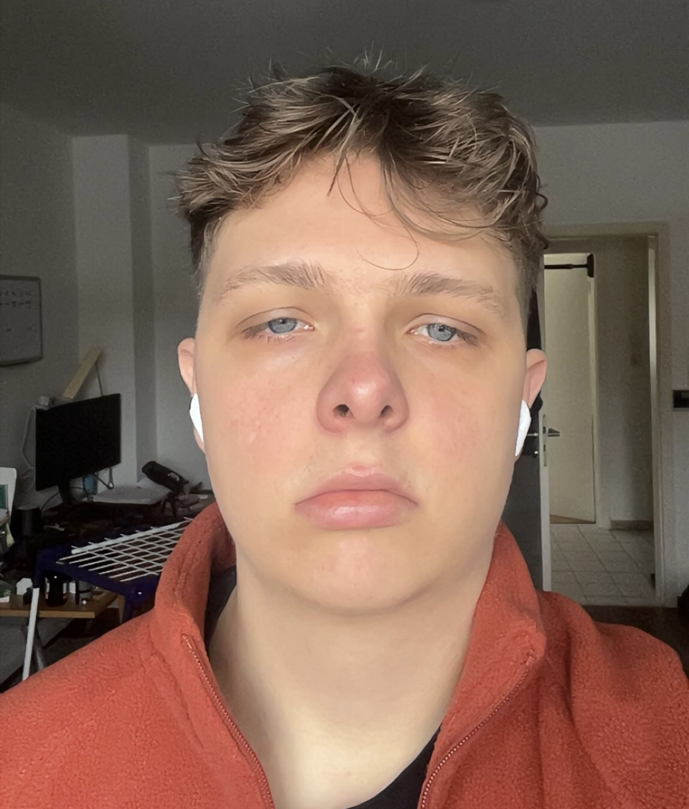

das bin ich :)
Ich studiere Medieninformatik und arbeite daran, eine App zu entwickeln, die Menschen im Umgang mit ihrer mentalen Gesundheit unterstützt.
Für mich ist Mental Health nichts Theoretisches. Es ist etwas, das mich schon seit Jahren begleitet.
Während meiner Abiturzeit hat es angefangen. Ich hatte oft das Gefühl, nicht richtig dazuzugehören, irgendwie fehl am Platz zu sein. Als würde ich einfach nicht wirklich Teil von irgendwas sein.
Dieses Gefühl hat sich durchgezogen – bis heute. Es hat vieles schwieriger gemacht: Anschluss finden, Selbstvertrauen aufbauen, einfach normal seinen Weg gehen.
Ich glaube, mentale Gesundheit und Selbstbewusstsein hängen extrem stark zusammen. Wenn es dir mental nicht gut geht, ist es verdammt schwer, wirklich an dich selbst zu glauben.
Hier erkläre ich meine Idee und was ich aufbauen will:
Genau deshalb möchte ich eine App entwickeln, die sich nicht wie ein kaltes Tool anfühlt, sondern wie ein ruhiger, ehrlicher Begleiter.
Kein Druck. Keine Verpflichtungen. Kein „du musst jetzt alles ändern“. Sondern einfach ein Ort, an dem man kurz ehrlich sein kann.
Ich weiß noch nicht genau, wohin das Ganze führt. Aber ich weiß, dass ich etwas bauen will, das sich für Menschen wirklich gut anfühlt.
Ich möchte eine App bauen, die sich nicht wie ein Tool anfühlt, sondern eher wie jemand, mit dem man ehrlich reden kann.
Ein Ort, an dem du einfach schreiben kannst, was gerade in deinem Kopf ist – ohne bewertet zu werden.
Die App soll nicht nur reagieren, sondern versuchen, dich wirklich zu verstehen und auf dich einzugehen.
Dir helfen, deine Gedanken zu sortieren und Muster zu erkennen, die dir selbst vielleicht gar nicht auffallen.
Kleine Impulse geben, die dir helfen können, dich Schritt für Schritt besser zu fühlen – ohne Druck.
Das ist kein fertiges Produkt – sondern etwas, das Schritt für Schritt wächst. Genau so, wie man selbst auch wächst.
Ich stehe noch ganz am Anfang und bringe mir Programmieren selbst bei. Schritt für Schritt arbeite ich daran, diese Idee Realität werden zu lassen.
Wenn du meine Idee gut findest und mich auf diesem Weg unterstützen möchtest:
P Mit PayPal unterstützenWenn du Gedanken, Feedback oder Ideen hast, schreib mir gern:
„Mir ist wichtiger, wie sich mein Leben für mich anfühlt,
als wie es nach außen wirkt.“
– Denk mal drüber nach.